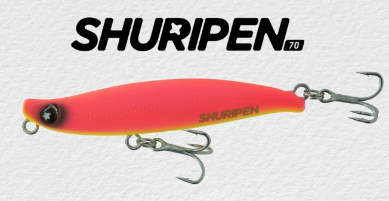
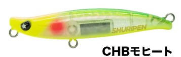
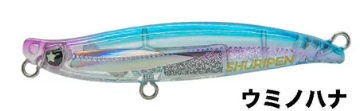
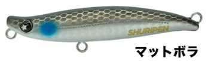
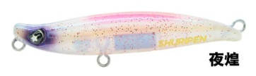

shuripen70
shuripen70はLEGAREのシンキングシンキングペンシルです。
シーバス向けにサイズアップ。マイクロベイト特化シンペン

スペック
- メーカー
- LEGARE（レガーレ）
- 長さ
- 70 mm
- 重さ
- 8 g
- フック
- #10
- リング
- #2
- レンジ
- 表層〜30cm
- タイプ
- シンキングペンシル
- 沈下タイプ
- シンキング
- アクション
- ナチュラルスウィング（浮上アクション）
- ターゲット
- シーバス（バチ抜け・マイクロベイトパターン）
- カラー
- 全15色
- 価格
- 1,830円（税込）
▼今すぐチェック
ここに商品リンクやカエレバを手動で追加してください。
シュリペン70の特徴
「届かなかった沖の表層を、プラグ1本で攻略する」——SHURIPEN55のシーバス専用再設計版
-
浮上アクションでスローリトリーブでも表層レンジをキープ
特徴的なボディ形状が生み出す浮上アクションにより、デッドスロー〜スローリトリーブでも水面直下のレンジから沈まずにキープし続ける。
引き波を出しながらの表層使用も可能で、ロッド操作でトップ系の水面アクションへの切り替えもできる。 -
8gで沖の表層に届く飛距離
フロートリグなしでは届かなかった沖のバチポイント・沖のライズを射程に収められる飛距離が最大の実用的メリット。
「あの沖のライズに届かない」という状況を解決する。 -
SHURIPEN55のシーバス専用完全再設計版
ライトゲームで実績を積んだSHURIPEN55のコンセプトを継承しながら、バチ・ハク・イナッコパターンのシーバスに特化してアクションを徹底見直し。
70mmにサイズアップしながら食わせ性能を損なわないチューニングで仕上げた。
シュリペン70の使い方
基本はデッドスロー〜スローのただ巻き。表層レンジを浮上アクションでキープしながら引いてくる。バチ抜けパターンではほぼ止めるくらいの超スローが有効。
トップを意識した場面ではロッドを立ててチョンチョンと動かすことで水面系の動きに切り替えられる。
沖のライズ・明暗の外の遠いポイントにはキャストして着水後すぐにリトリーブ開始——着水音→即表層引きのシークエンスがバイトを引き出しやすい。
シュリペン70の得意な状況
春〜初夏のバチ抜けシーズン・ハクパターン・イナッコパターンが最大の出番。
特に「バチ・ハクが沖に多くてフロートリグでないと届かない」という状況をプラグ1本で解決できる点が強い。
ワンポイント
人気カラー

CHBモヒートチャートホロ系のアピールカラー。濁り・ローライト時の定番。

ウミノハナナチュラルなバチ系カラー。バチ抜けの基本カラー。

マットボラボラをイメージしたナチュラル系。澄み潮・デイゲームの基本。

夜煌ナイトゲーム特化のグロー系。常夜灯周りのバチ・ハクパターンに。
その他カラー：クリアパーシモー・スピネル・コスモス・グリーンチップ・PHシャイナー・幻耀一閃・CBピンク・ヘリオス・アラゴナイト・にんじん・ホルス（全15色）
画像出典:LEGARE公式HP
シュリペン70に似ているルアー
- SHURIPEN55（レガーレ）——同シリーズのライトゲーム版。メバル・アジ向けのコンパクトモデルで、よりサイズを落としたい場面に。
- アメシラス80（海太郎）——村上晴彦プロデュースのバチ抜けシンペン。SHURIPEN70の浮上アクションに対し、アメシラス80はバックスライドフォール特化という違いがある。
- アルデンテ70S（ima）——大野ゆうき監修のバチ抜けシンペン。近〜中距離のゆらぎロール精度重視に対し、SHURIPEN70は飛距離を活かして沖の表層を広く探るのが得意。